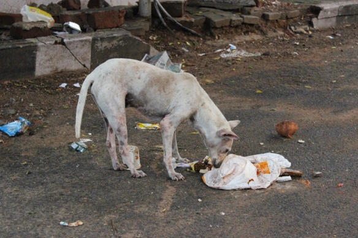

SAFI
In India, street dogs are misunderstood as sangerous, savage animals. SAFI works alongside India's local shelters to recuse, rehabitate, vaccinate, and house these strays in need.
On average SAFI rescues 40 dogs and cats a month. We want to be the change India's innocent lives desperately deserve and need, giving these street animals an opportunity, maybe the only opportunity they ever meet, to live happily and healthy lives, even when other organizations may turn them away.BOUR MODELFor now, the best chance for India's stray animals is to give them the care they need to fend for themselves on the street. SAFI uses the RRSR approach-Rescue, Rehab, Sterilize and Release to give Indian dogs the best chance to fend for themselves in the current climate. This allows us to give many more animals what they need without overwhelming the nation's current shelter infrastructure, while our public education and abuse prevention arm works to build a society better suited to the needs of these animals. Those animals whose age or medical issues render them unable to survive on the streets receive a forever home in a local sanctuary.
Since 2020, we’ve helped build up India’s animal welfare infrastructure, providing medical care, food, forever home matching, education, and much more. Your tax-deductible donation helps us fight for stray animals in India.


Stray Animal Foundation of India is a 501(c)3 charitable organization, and all donations to help India’s stray animals are tax-deductible to the fullest extent of the law. 100% of the contribution goes directly to the rescue. EIN: 85-1128778. Registered NGO in India under Indian Trusts Act 1882
© Stray Animal Foundation of India. All rights reserved.
Every doller makes different inthe lives of these animals. SAFI offers many ways to donate
find volunteer opertunities in India, US or internationally!
Everyone deserves a home. See how you can help our shelter animals find forever families
start your down social media fundraising campaign and help raise funds for India's shelters.